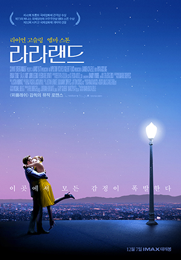

인생 영화 BEST5
| 순위 | 제목 | 포스터 | 줄거리 | 바로가기 |
|---|---|---|---|---|
| 1 | UP |  |
평생 모험을 꿈꿔 왔던 ‘칼’ 할아버지는 수천 개의 풍선을 매달아 집을 통째로 남아메리카로 날려 버리는데,
‘칼’ 할아버지의 이 위대한 모험에 초대 받지 않은 불청객이 있었으니, 바로 황야의 탐험가 ‘러셀’! 지구상에 둘도 없을 이 어색한 커플이 함께 하는 대모험. 그들은 과연 남미의 잃어버린 세계에서 사라져 버린 꿈과 희망, 행복을 다시 찾을 수 있을까? |
보러가기 |
| 2 | 라라랜드 |  | 꿈을 꾸는 사람들을 위한 별들의 도시 ‘라라랜드’.
재즈 피아니스트 ‘세바스찬’(라이언 고슬링)과 배우 지망생 ‘미아’(엠마 스톤), 인생에서 가장 빛나는 순간 만난 두 사람은 미완성인 서로의 무대를 만들어가기 시작한다. |
보러가기 |
| 3 | 하울의 움직이는 성 | 어느 날, 영문도 모른 채 마녀의 저주로 인해 할머니가 된 소녀 '소피'.
절망 속에서 길을 걷다가 거대한 마법의 성에 들어가게 된다. 그곳에서 자신과 마법사 하울의 계약을 깨주면 저주를 풀어주겠다는 불꽃악마 캘시퍼의 제안을 받고 청소부가 되어 ‘움직이는 성’에 머물게 되는데… |
보러가기 | |
| 4 | 아바타 | 지구 에너지 고갈 문제를 해결하기 위해 판도라 행성으로 향한 인류는 원주민 ‘나비족’과 대립하게 된다. 이 과정에서, 전직 해병대원 제이크 설리(샘 워싱턴)가 ‘아바타’ 프로그램을 통해 ‘나비족’의 중심부에 투입되는데… | 보러가기 | |
| 5 | 오늘 밤, 세계에서 이 사랑이 사라진다 해도 | “카미야 토루에 대해 잊지 말 것” 자고 일어나면 전날의 기억을 잃는 ‘선행성 기억상실증’에 걸린 소녀 ‘마오리’ “내일의 마오리도 내가 즐겁게 해줄 거야" 누구에게도 기억되지 않는 무색무취의 평범한 소년 ‘토루’ 매일 밤 사랑이 사라지는 세계, 그럼에도 불구하고, 다음 날 서로를 향한 애틋한 고백을 반복하는 두 소년, 소녀의 가장 슬픈 청춘담 | 보러가기 |